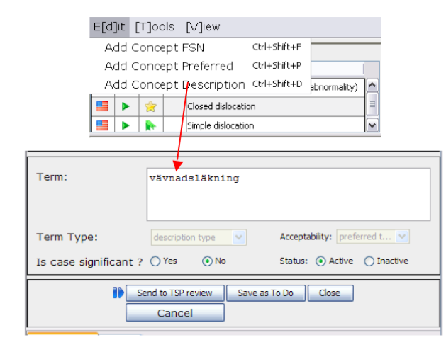
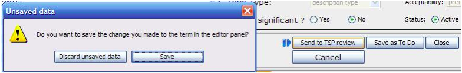
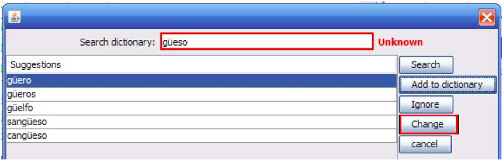

This is the working window. The translator must choose an option from the upper menu to
enable writing in the translation window, according to the configuration options defined by
the project manager. Otherwise, writing will not be allowed. In this example, the project
manager has configured the project for a full editor translator, so he/she will be able to add
FSNs, PTs and synonyms.

- The translator writes the new description and decides what to do with it.

- In this case, SAVE option and “Send to TSP review” was selected. A typo was
intentionally introduced in the example. The spelling review tool will detect an unknown
word upon clicking “Save” button. The unknown word will be displayed in a new window with
correct spelling suggestions and a list of possible actions.

- When a dictionary option is selected, the spelling tool window disappears, as well as
the translated description. The following worklist item will be automatically displayed if
this option has been previously select.